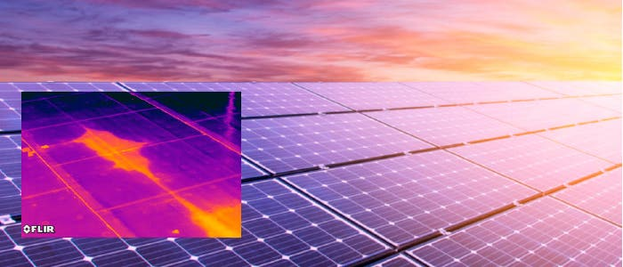

Átfogó Drónszolgáltatások
-
A Drón használata
- Idójárásfüggő
- Engedélykötelezett
- Veszélyes
- A szükséges ellenörzőlista figyelembevételével
- Biztonságosan alkalmazható
A megrendelés menete
- Válassza ki a szolgáltatást
- Kérjen árajánlatot
- Eggyeztessen időpontot
- Élvezze a magas színvonalú, nyereségre, biztonságra szolgáló előnyöket
Bővebb info a Monitoring szolgáltatásról
Bővebb info a napelemek vizsgálatáról
